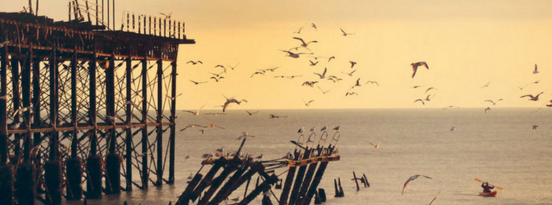
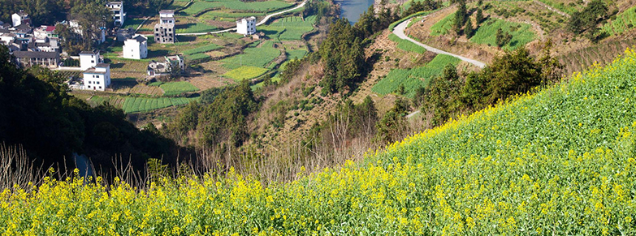

悠然自得逛古城，清迈行摄记录
清迈，一个因为一首小城故事而令无数人向往的城市
清迈，一个因为小城故事而令无数人向往的城市，能够被一个歌后是唯一僧最爱，想必一定美得独特。十一长假到来，终于能走出每天两点一线生活的城市，即使有着观人海的担忧，仍然是无比的激动。然而事实上我多虑了，清迈这座清新的古城并没有因为国人的倾巢出动而拥挤，这让我们这次旅行无比的愉快。
清迈给我的第一印象还是有些让我始料不及的，虽然早知道这是一座有着悠久历史的古城，但是没有想到它并没有被现代的城市生活过多的侵扰。清迈没有高楼，城市中分布着各种寺庙，虽然街道边的建筑显得很久很破，但是每个门前都打扫的很干净。人们的穿着朴素简单，但是都很热情善良。
黄山古镇，小城最是故事多
黄山古镇，小城最是故事多
黄山市，在古代被称作徽州，一个念起来朗朗上口，韵味悠长的名字。《牡丹亭》作者汤显祖一生对徽州魂牵梦绕，却始终没能去成，留下了“一生痴绝处，无梦到徽州”的千古绝唱。来这里大多数人必是冲着黄山而来，诚然，名山大川固美，小桥流水却也别有一番风情。黄山市里有很多古镇，如世外桃源般纯美古朴。每一个小城，都有它的悠久的历史和独特的故事。
黄山给我的第一印象还是有些让我始料不及的，虽然早知道这是一座有着悠久历史的古城，但是没有想到它并没有被现代的城市生活过多的侵扰。清迈没有高楼，城市中分布着各种寺庙，虽然街道边的建筑显得很久很破，但是每个门前都打扫的很干净。人们的穿着朴素简单，但是都很热情善良。